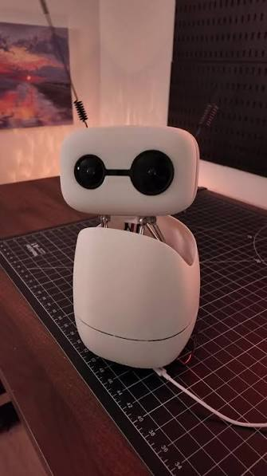

Reachy Mini: Humanoid Companion & AI Agent

Reachy Mini by Pollen Robotics is a highly expressive, open-source humanoid desktop robot. Equipped with the revolutionary 3-DOF Orbita Joint, animated LCD eyes, and a lightweight robot arm, Reachy Mini serves as an ideal platform for exploring social robotics, Embodied AI, and interactive controls.
Orbita Head & Expressive Mechanism
Animated LCD Eyes
Dual circular LCD displays render dynamic pupil movement, blinks, and emotions.
Orbita 3-DOF Neck
Patented parallel mechanism allows smooth pitch, roll, and yaw with speed and agility.
Embodied Integration
Designed to serve as a physical avatar for Large Language Models (LLMs) and vision systems.
AI & Teleoperation Capabilities
Reachy Mini is not just a robotic arm—it is a full research platform for modern AI, supporting complex multi-modal interactions and deep learning pipelines.
-
VR Teleoperation (WebRTC)
Using a WebRTC backend, you can teleoperate Reachy Mini from anywhere in the world using a Meta Quest headset. Operators see through the robot's chest-mounted camera in real-time, allowing them to record human-quality demonstrations for training neural networks.
-
LLM Voice Agents
Integrate Reachy Mini with Whisper STT and large language models (like GPT-4o or Llama 3) to create conversational agents. The robot can process spoken queries, generate responses, and synchronize its head movements and LCD eye expressions dynamically to the conversational context.
-
Imitation Learning (ACT)
The platform supports recording state-action pairs (camera frames + joint positions) at 30-50Hz. This data can be directly fed into architectures like Action Chunking with Transformers (ACT) to train the robot to perform autonomous pick-and-place or manipulation tasks.
Hardware & Specification
Reachy Mini is powered by a central computer (Raspberry Pi 4 or Raspberry Pi 5) connected to smart motor buses and a control board. Below is the reference architecture specification:
| Subsystem | Specification Details | Interface Type |
|---|---|---|
| Processor Core | Raspberry Pi 4B (4GB/8GB) / Raspberry Pi 5 | Broadcom SOC / PCIe |
| Neck Actuators | 3x Custom servos with parallel linkage | USB-to-Serial Bus (Dynamixel Protocol) |
| Arm Joints | XL-320 or XL-430 smart serial servos | Half-Duplex TTL Bus |
| Vision Sensor | Wide-angle USB camera module in chest/head | UVC Driver (V4L2) |
| LCD Screens | 2x SPI GC9A01 1.28-inch circular screens | SPI Bus (GPIO) |
SDK & System Setup
You can run controls directly on Reachy Mini or connect remotely over gRPC using the python library.
# Create virtual environment
python3 -m venv reachy_env
source reachy_env/bin/activate
# Install reachy-sdk
pip install reachy-sdk --upgrade
# Install extra dependencies for simulation support
pip install reachy-sdk[sim] pyovspace numpyPython SDK Control Code
The following Python script connects to Reachy Mini and demonstrates basic head tracking/orientation commands using the SDK:
import time
from reachy_sdk import ReachySDK
# Connect to Reachy Mini (use local IP or localhost in sim)
reachy = ReachySDK(host='192.168.1.100')
# Enable motor torque
reachy.turn_on('head')
print("Sending neck orientation commands...")
# Move Orbita neck to look straight with subtle tilt
reachy.head.look_at(x=1.0, y=0.0, z=0.2, duration=2.0)
time.sleep(2.0)
# Tilt right
reachy.head.look_at(x=1.0, y=-0.3, z=0.0, duration=1.5)
time.sleep(2.0)
# Tilt left
reachy.head.look_at(x=1.0, y=0.3, z=0.0, duration=1.5)
time.sleep(2.0)
# Reset position
reachy.head.look_at(x=1.0, y=0.0, z=0.0, duration=1.0)
time.sleep(1.0)
# Safely turn off torque
reachy.turn_off('head')
print("Completed successfully!")Troubleshooting (FAQ)
sudo raspi-config).systemctl status reachy_sdk_server. Also ensure both your control PC and the robot are on the same local network subnet.Citations & Resources
Reachy Mini is developed by Pollen Robotics under open-source hardware/software licenses. For resources, documentation, and assemblies, visit: